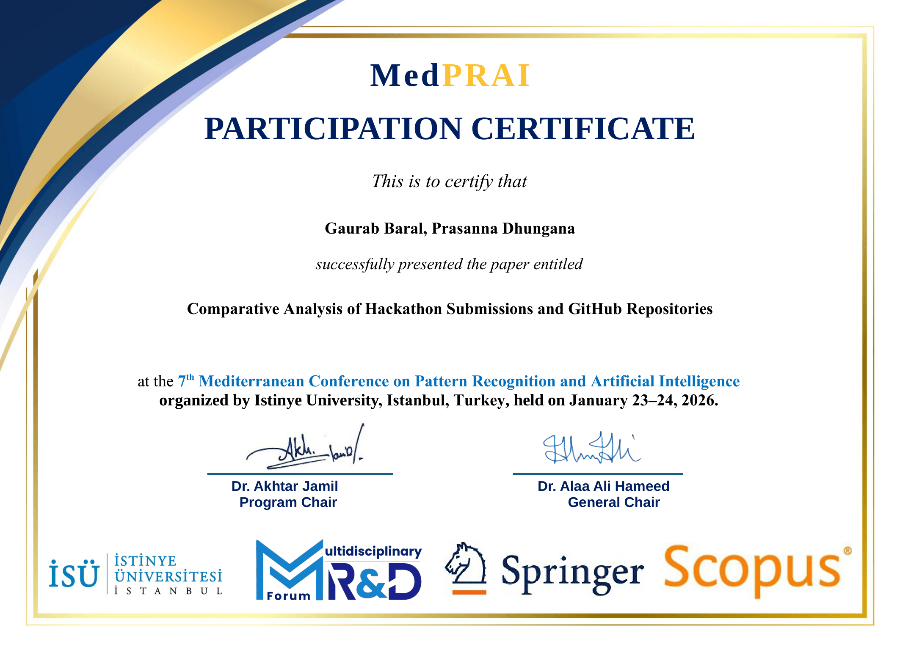
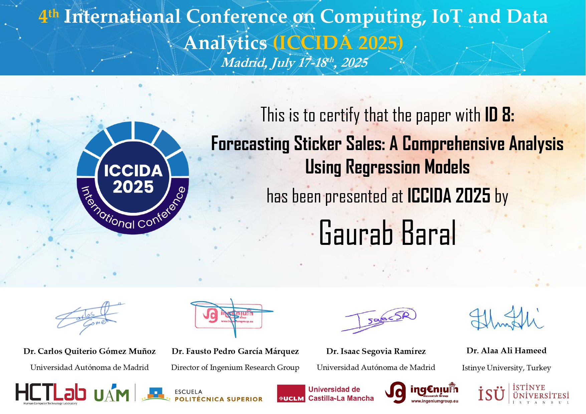
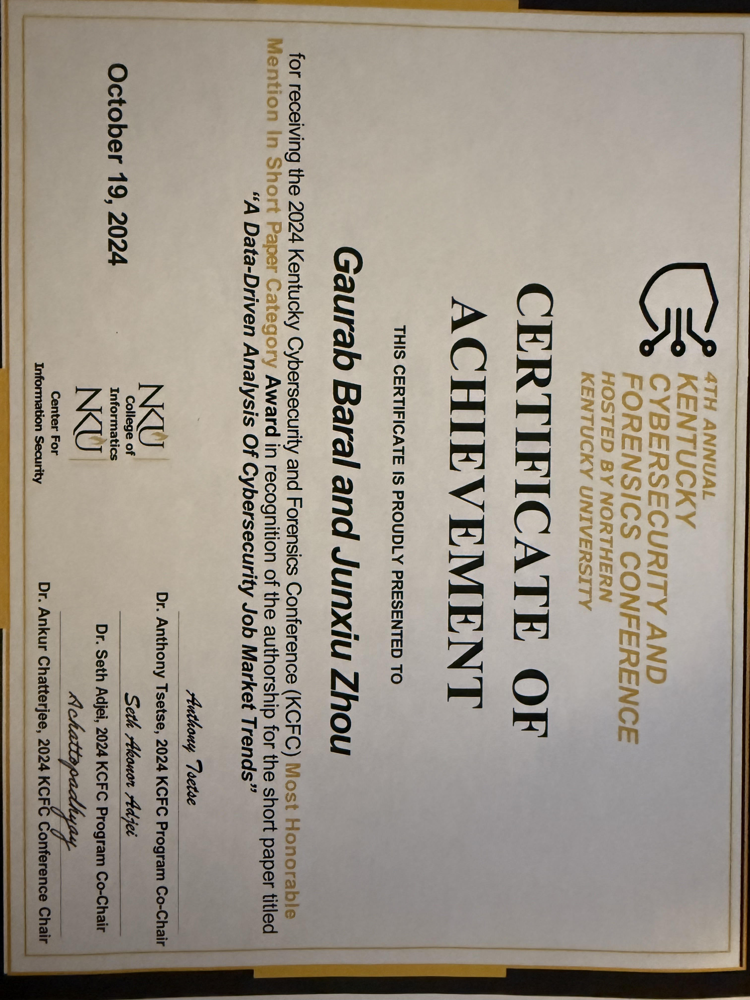
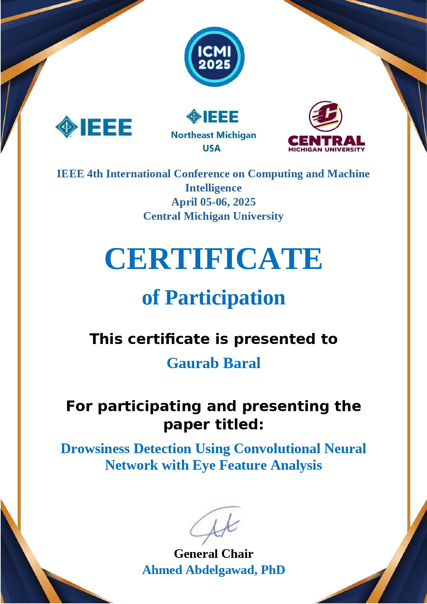
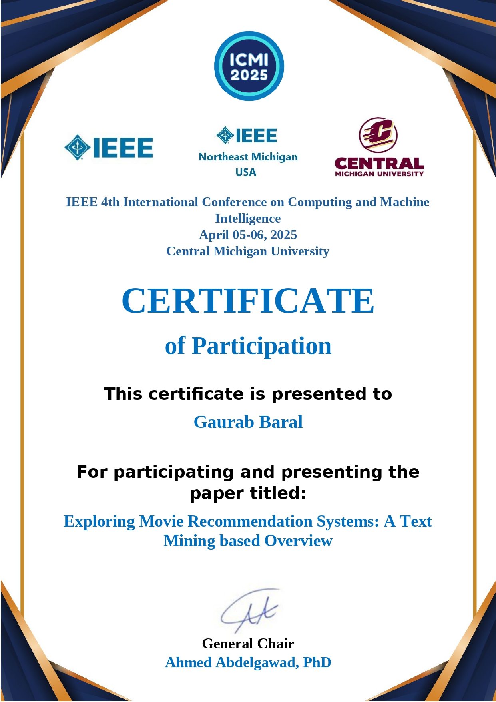
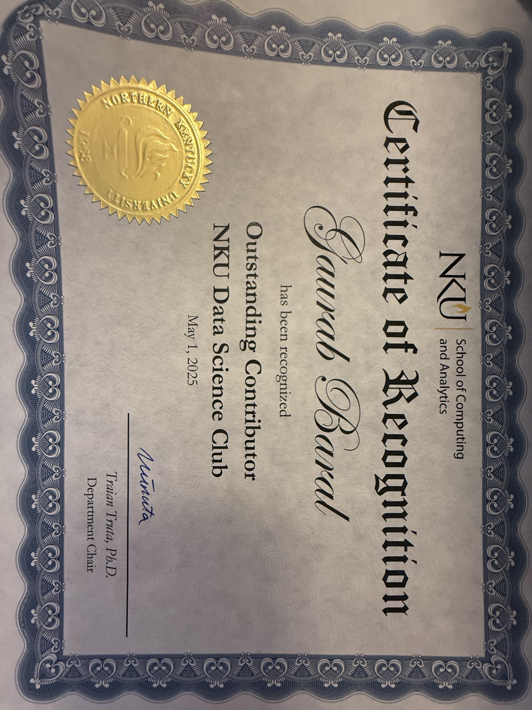
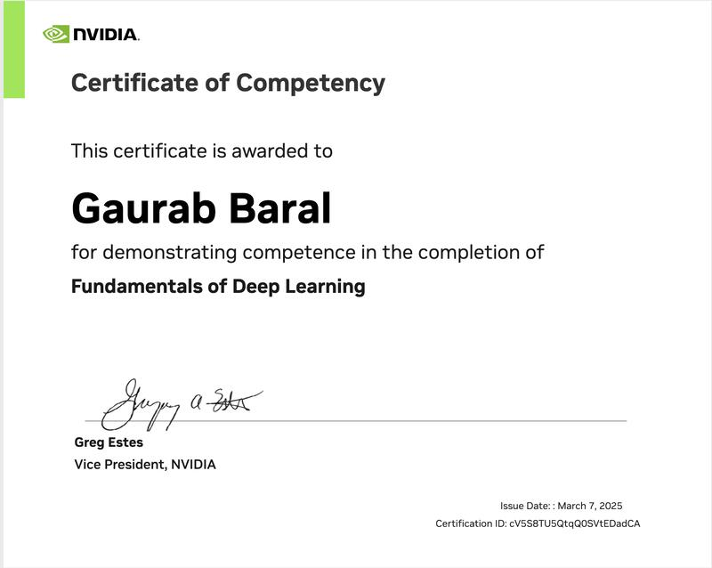
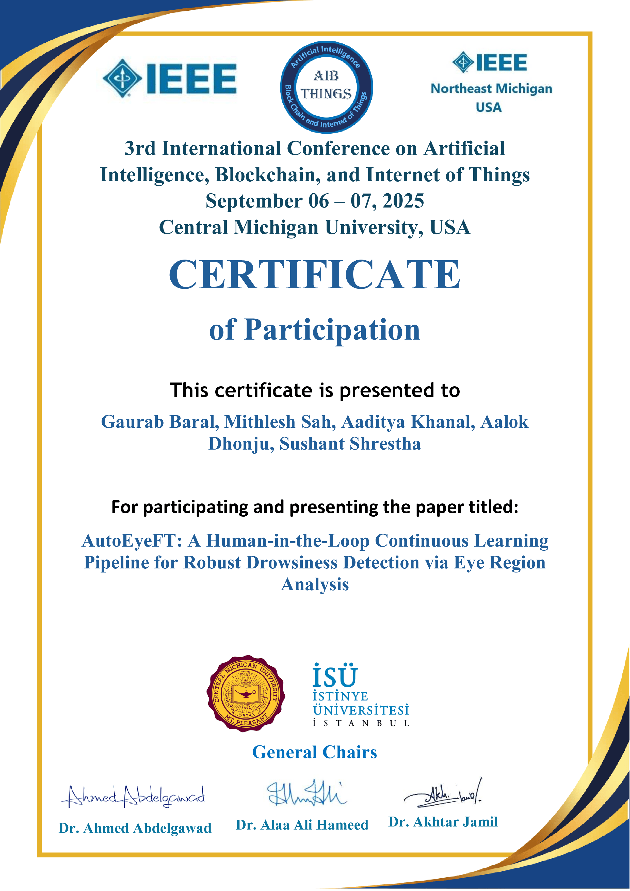
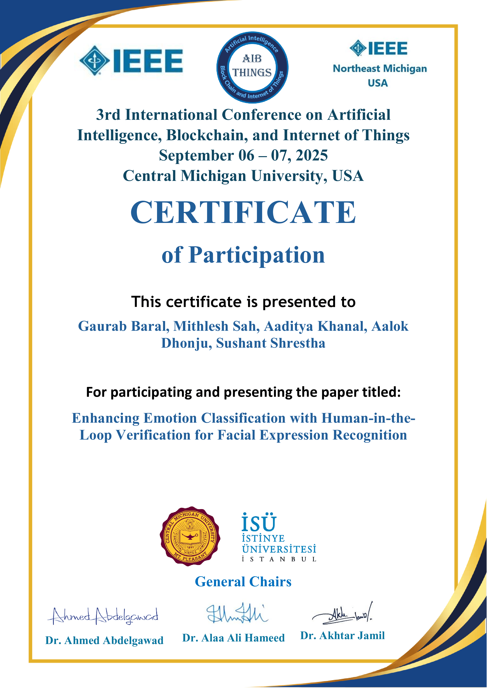

About Me
I am a Data Science student and LIFE Fellow at Northern Kentucky University with a strong academic record, leadership experience, and active research involvement. Minoring in Computer Science, Statistics, and Biological Sciences. I currently work as a statistical consultant and contribute to research initiatives in the College of Informatics.
Research Interests
- Machine Learning & AI
- Natural Language Processing
- Computer Vision
Areas of Focus
- Deep Learning
- Data Science & Analytics
- Applications of Artificial Intelligence
News
Completed KCV Fellowship
Completed a month-long fellowship about technology commercialization at Kentucky Commercialization Ventures.
Paper Accepted & Reviewer for ICCAI-2026
Paper accepted on hackathon multi-modal classification; also served as reviewer for ICCAI 2026.
Paper Accepted for EDUNINE 2026
Paper on a Virtual Teaching Assistant using RAG for graduate Cybersecurity education accepted at IEEE World Engineering Education Conference.
Paper Accepted for ICSADL-2026
Conference paper on Sentiment Analysis of LLM Reviews accepted at IEEE ICSADL-2026.
Paper Accepted for MedPRAI-2026
Hackathon analytics paper accepted at the 7th Mediterranean Conference on Pattern Recognition and AI.
Paper Reviewer for WDSI 2026
Reviewed 5 academic papers for the AI Applications in Business Decisions track at the 2026 WDSI Annual Conference.
Speaker at Cyber18 NKU
Selected as a key speaker for the Cyber18 conference at Northern Kentucky University.
Paper Reviewer for CISSE 2025
Serving as an academic reviewer for the Colloquium for Information Systems Security Education.
2 Papers Accepted at AIBThings 2025
Research on IoT and AI applications accepted for publication and presentation.
Paper Accepted at ICCIDA 2025
Research accepted at the International Conference on Computing, IoT and Data Analytics.
2 Papers Accepted at IEEE ICMI 2025
Double acceptance for research contributions at the 2025 IEEE conference.
Kentucky Capitol Presentation
Selected to present research poster at the state capitol for the 2025 session.
Paper Accepted in AHFE 2024
Research accepted for publication in AHFE International Conference proceedings.
Paper Accepted at KCFC 2024
Contribution accepted for the Kentucky Cybersecurity & Forensics Conference.
Kentucky Capitol Presentation
Presented research findings to legislators and the public at the 2024 Capitol event.
LIFE Fellow Recipient
Awarded the prestigious LIFE Fellowship at Northern Kentucky University.
Publications
2026
Enhancing Cybersecurity Education with Retrieval-Augmented Generation: A Virtual Teaching Assistant Approach
Predicting Hackathon Success: A Multi-Modal Approach
Comparative Analysis of Hackathon Submissions and GitHub Repositories
Sentiment Analysis of Reviews of Top Large Language Models
2025
Forecasting Sticker Sales: A Comprehensive Analysis Using Regression Models
Enhancing Emotion Classification with Human-in-the-Loop Verification for Facial Expression Recognition
AutoEyeFT: A Human-in-the-Loop Continuous Learning Pipeline for Robust Drowsiness Detection via Eye Region Analysis
2024
Exploring Movie Recommendation Systems: A Text Mining based Overview
Drowsiness Detection Using Convolutional Neural Network with Eye Feature Analysis
A Data-Driven Analysis of Cybersecurity Job Market Trends
A Hybrid Regression Method for Predicting Housing Prices
Teaching & Service
Teaching
Northern Kentucky University
- —INF 101 (Fall 2023): TA for Introductory Python Programming — supported 32 students through tutoring, grading, and lab facilitation.
- —DSC 101 (Fall 2024): TA for Introductory Data Science — aided 26 students with coursework, review sessions, and exam grading.
- —Statistics Tutor (Ongoing): One-on-one and group tutoring in statistical concepts, regression analysis, and hypothesis testing.
Leadership & Clubs
College of Informatics · NKU
- —Founded the student-led Data Science Club, organizing events and fostering collaboration across the College of Informatics.
- —Lead weekly Python programming workshops for members, covering topics from fundamentals to advanced ML techniques.
- —Organize collaborative ML study groups covering algorithms and real-world applications.
Google Developer Groups · NKU Chapter
- —Represent NKU at the Google Developer Group chapter, connecting students with Google technologies, events, and developer resources.
College of Informatics · NKU
- —Serve as an official ambassador for the College of Informatics, representing the college at outreach events and engaging prospective students.
University Service
NKU — CS & Software Engineering Faculty Search
- —Served as Student Representative on the search committee for Assistant Professor roles in Computer Science and Software Engineering.
NKU Mentorship Program
- —Help incoming STEM students navigate their college experience through academic guidance and peer support.
Academic Conferences in AI, Data Science & Cybersecurity
- —Reviewed 5 papers for WDSI Annual Conference (2026) — AI Applications in Business Decisions.
- —Reviewed 1 paper for IEEE ICCAI (2026) — International Conference on Computational AI.
- —Reviewed 1 paper for CISSE (2025) — Information Systems Security Education.
Work Experience
College of Informatics · NKU · Part-time · Hybrid
- —Working as a Student Researcher contributing to innovative projects in data science and artificial intelligence.
- —Work has resulted in 10+ research publications and hands-on experience with cutting-edge AI techniques.
Burkhardt Consulting Center · NKU · On-site
- —Conducted statistical analyses (Regression, ANOVA, Hypothesis Testing) to uncover patterns and support decision-making.
- —Developed reports and dashboards delivering actionable insights for DNP projects, ensuring data accuracy and timely feedback.
Kentucky Commercialization Ventures • Internship
- —Selected for cross-functional tech commercialization team with a fast time-to-market focus; responsible for building market validation tools, conducting customer interviews, and assessing technology readiness levels.
- —Developed and presented go-to-market strategies, including market positioning, revenue model options, and ecosystem partner maps.
RE-Assist · Remote
- —Used OpenCV and AWS Textract to extract fields from scanned medical forms; applied Google Gemini to intelligently fill extracted fields.
- —Built a FastAPI-based PDF auto-filler in Python; packaged with Docker and deployed serverlessly using AWS EC2.
Certificates

Certificate of Presenting at ICSADL Conference — LLM Sentiment Analysis Paper

Certificate of Presenting at MedPRAI Conference — Hackathon Analytics Paper

Certificate of Presenting at ICCIDA — Sticker Sales Regression Paper

Certificate of Presenting at KCFC — Cybersecurity Job Analysis Paper

Certificate of Presenting at ICMI — Drowsiness Detection Paper

Certificate of Presenting at ICMI — Movie Recommendation Paper

Outstanding Contributor Recognition — NKU Data Science Club

NVIDIA — Fundamentals of Deep Learning Certificate

Certificate of Presenting at AIBThings — Drowsiness Detection Paper

Certificate of Presenting at AIBThings — Emotion Recognition Paper